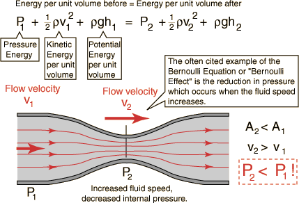
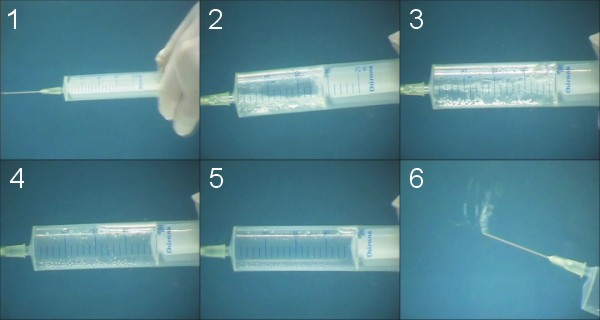
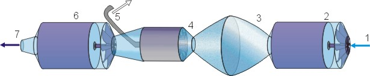

1. Introduction
Project Breathing under water started when I was filling a syringe through thin needle. I noticed bubbles of air appearing in the syringe.
This was an exciting discovery. I realised the water had degassed and parted from the dissolved air. Fish breath this same air. I decided I want to understand this and explore. I realised it is possible to breathe the air dissolved in water.
The aim of the project was is to develop an appliance which allows to a man to breathe air extracted from water. In other words, aim of the project is to explain physical mechanism of degassing water and to construct an efficient design to supply a man with breathable healthy fresh air under water. Build it. Test it and get it on the market.
14 years on, it's mind-blowing to reflect back and see how this has changed the world... from diving gear to fracking and what it triggered.
A scientific paper published in Russia in public domain by an 18 year old dad.

2. Methodology
The project has a definite aim so I searched and studied in different sources only for specific information related to the topic.
The design of an appliance for separating natural water components is still abstract. Appliance is still being developed at a theoretical level.
Experiment: The way of obtaining and checking information about the solution of gases is described in 4. Water degassing, section 4.3 Advance.
3. Introductory information
3.1 Natural laws
- Dalton’s law
- is physical law that states that the total pressure exerted by a homogeneous mixture of gases is equal to the sum of the partial pressures of the individual gases. The partial pressure of a gas is the pressure it would exert if all the other gases in the mixture were absent.
- It is principle that each gas in a mixture of gases exerts a pressure proportionately to the percentage of the gas and independently of the presence of the other gases present. It is also called law of partial pressures.
- Henry’s law
- is chemical law stating that the amount of a gas that dissolves in a liquid is proportional to the partial pressure of the gas over the liquid, provided no chemical reaction takes place between the liquid and the gas. It is named after William Henry (1774 - 1836), the English chemist who first reported the relationship.
- The mass of a gas which will dissolve into a solution is directly proportional to the partial pressure of that gas above the solution.
- The pressure of the gas above a solution is proportional to the concentration of the gas in the solution.
- When a gas is in contact with the surface of a liquid, the amount of the gas which will go into solution is proportional to the partial pressure of that gas. A simple rationale for Henry’s law is that if the partial pressure of a gas is twice as high, then on the average twice as many molecules will hit the liquid surface in a given time interval, and on the average twice as many will be captured and go into solution.
- For a gas mixture, Henry’s law helps to predict the amount of each gas which will go into solution, but different gases have different solubility and this also affects the rate. The constant of proportionality in Henry’s law must take this into account.
- For example, in the gas exchange processes in breathing, the solubility of carbon dioxide is about 22 times that of oxygen in contact with human tissue.
- Bernoulli’s principle

- is a statement of the conservation of energy in a form useful for solving problems involving fluids. For a non-viscous, incompressible fluid in steady flow, the sum of pressure, potential and kinetic energies per unit volume is constant at any point.
- Bernoulli’s principle states that as the speed of a moving fluid increases, the pressure within the fluid decreases.
- Boyle’s law
- is the principle that at a constant temperature the volume of a confined gas varies inversely with its pressure.
3.2 Water and gases
Natural water should be considered a gas solution with a balance of water and gases.
Bondarenko, N. F. - Gak, J. Z.: Elektromagnitnyje javlenija v prirodnych vodach. Saint Petersburg, Gidrometeoizdat 1984, p.7
It means that dissolving of gases in water decreases with a rise in temperature and increases with part pressure above solution. Water 293.15K contains this amount of gases: nitrogen 16.84 mg/l, oxygen 9.07 mg/l, argon 0.43 mg/l, carbon dioxide 0.36mg/l.
3.3 Cavitation and centrifugal pump
A fluid vaporises when its pressure gets too low, or its temperature too high. This problem is connected with low pressure pumps. Gas binding of a centrifugal pump is a condition where the pump casing is filled with gases or vapours to the point where the impeller is no longer able to contact enough fluid to function correctly. The impeller spins in the gas bubble, but is unable to force liquid through the pump. This can lead to cooling problems for the pump’s packing and bearings.
Centrifugal pumps are designed so that their pump casings are completely filled with liquid during pump operation. Most centrifugal pumps can still operate when a small amount of gas accumulates in the pump casing, but pumps in systems containing dissolved gases that are not designed to be self-venting should be periodically vented manually to ensure that gases do not build up in the pump casing.
3.4 Human breathing
3.4.1 Mechanics of breathing
- Ventilation
- Movement of air into and out of lungs
- Air moves from area of higher pressure to area of lower pressure
- Pressure is inversely related to volume
- External breathing
- Gas exchange between air in lungs and blood
- Transport of oxygen in the blood and carbon dioxide in the lungs
- Internal breathing
- Gas exchange between the blood and tissues
- Transport of oxygen in the tissues and carbon dioxide in the blood
- Pulmonary Volumes
- Tidal volume
- Volume of air inspired or expired during a normal inspiration or expiration - cca 500 ml
- Inspiratory reserve volume
- Amount of air inspired forcefully after inspiration of normal tidal volume - cca 2500
- Expiratory reserve volume
- Amount of air forcefully expired after expiration of normal tidal volume - cca 1000 ml
- Residual volume
- Volume of air remaining in respiratory passages and lungs after the most forceful expiration - cca 1500 ml
| Residual volume | Vital capacity | ||
|---|---|---|---|
| (cca 1.5 l) | Expiratory reserve volume (cca 1 l) | Tidal volume cca (0.5 l) | Inspiratory reserve volume (cca 2.5 l) |
- Pulmonary Capacities
- Inspiratory capacity
- Tidal volume plus inspiratory reserve volume
- Functional residual capacity
- Expiratory reserve volume plus the residual volume
- Vital capacity
- Sum of inspiratory reserve volume, tidal volume, and expiratory reserve volume
- Total lung capacity
- Sum of inspiratory and expiratory reserve volumes plus the tidal volume and residual volume
- Minute and Alveolar Ventilation
- Minute ventilation
- Total amount of air moved into and out of respiratory system per minute, at rest 7 -9 l
- Respiratory rate or frequency
- Number of breaths taken per minute, at rest 14 -18
- Anatomic dead space
- Part of respiratory system where gas exchange does not take place
- Alveolar ventilation
- How much air per minute enters the parts of the respiratory system in which gas exchange takes place
3.4.2 Air exchange in lungs and tissues
- Physical Principles of Gas Exchange
- Diffusion of gases through the respiratory membrane
- depends on: membranes thickness, the diffusion coefficient of gas, surface areas of membrane and partial pressure of gases in alveoli and blood.
- Relationship between ventilation and pulmonary capillary flow
- Increased ventilation or increased pulmonary capillary blood flow increases gas exchange.
- Physiologic shunt is deoxygenated blood returning from lungs.
| Air | Gases in % | ||
|---|---|---|---|
| O2 | CO2 | N2 | |
| atmospheric | 20.92 | 0.04 | 79.04 |
| alveolar | 14.1 | 5.6 | 79.7 |
| exspirated | 16,3 | 4.0 | 79.3 |
- Oxygen and Carbon Dioxide Diffusion Gradients
- Oxygen
- Moves from alveoli into blood. Blood is almost completely saturated with oxygen when it leaves the capillary
- Oxygen moves from tissue capillaries into the tissues
- Carbon dioxide
- Moves from tissues into tissue capillaries
- Moves from pulmonary capillaries into the alveoli
3.4.3 Respiration underwater
Revolution in a history of a Diving has taken place in 1943. Jacques-Yves Cousteau and Emile Gagnan have devised the first working vehicle with an open-air circuit of breathing. Diving with compressed air or other gas mixture stored in tanks used by the diver (SCUBA-Diving). There are 2 types of aqualung: with opened and closed cycle of breathing (the systems with an open breathing circuit eject all used air, popular for recreational diving).
Systems with the closed breathing cycle are those where inhaled air circles back in a respiration system and after absorption of a carbon dioxide and adding of oxygen will be used again for breathing. Such systems were used before occurence of open circuit systems and were used by military divers, who tried to avoid bubbles that could be spotted on the surface.
Water is not a natural environment for a human. The main limiting factors are:
- Need to breath
- Hydrostatic pressure
To survive under the water for longer one needs to eliminate these limitations.
4. Water degassing
A stimulated separation of dissolved gases from natural water.
4.1 Equipment
Experiment
- Syringe volume 20 ml or more
- needles (various diameters)
- thermometer
- measure of separated gas volume (capillary tube)
- pipette
- tank with water
Observation
Sparkling water
4.2 Principle
- Hypothesis for experiment
- Large difference between pressure in the needle and the syringe leads to a larger volume of extracted gas.
- Hypothesis for observation
- Liquid solution of water, gases and another substances has an inner structure. And so releasing of gases depends on more factors than just partial pressure and temperature.
4.3 Advance
Experiment

- Sink the syringe
- Admission water, low pressure in syringe - near vacuum, cavitation
- Admission water, low pressure in syringe - rising of pressure, cavitation
- Rising of pressure, reducing of bubble volume
- Rising of pressure, reducing of bubble volume
- End, gas is now in gas phase
- Measuring of separated gas volume
- Notation values
- Evaluation and interpretation
Observation
Observation of solution behaviour in different conditions.
4.4 Results
Using this primitive method we can extract 1% of dissolved gases into gas phase. We can see that bigger difference of pressure (using thin needle) has not better effect than fast putting water without needle.
1st hypothesis was disproved by evidence. There is only so much air that can be extracted from water. Pressure difference stops being a factor at certain treshold.
2nd hypothesis was established. The degassing process depends on variety of conditions. Foreign-matter content - “condensing” cores for gases, free surface of the liquid, it's motion, material of the tank. We can see that abrasive materials increased degassing speed. Abrasive materials have large free surface where gases can condense. Intro change in partial pressure of gases above solution volume of eliminate gases per time is linear depending on water free surface.
5. Appliance
5.1 Parameters
- Human breathing: Total amount of air moved into and out of respiratory system per minute, at rest and normal pressure 7-9 l
- We are able to obtain from water 1% of dissolved gases into the gas phase so we have to degas at least 700-900 l of water per minute to supply a man with respiratory gases on the level.
- Hydrostatic pressure and stress increases body oxygen requests. Depth can increases the amount of air required by the body on such a level that no pump could manage it. But there are still systems with a closed cycle of breathing, in which inhaled air is returned in a respiratory contour, and after absorpting carbon dioxide and adding of oxygen, again the air can be utilized for breathing. Such combination of appliances could maximize divers limited work time.
- Volume of gases dissolved in water we are able to separate depends on temperature and pressure of gases above the water surface.
5.2 Centrifugal Pump
We need strong flow, lower pressure and low consumption of energy. Jet centrifugal pump is the best type of pump for the purpose.
5.3 Scheme

- Suction
- 1st centrifugal pump
- Degas tank - Low pressure centre
- Centrifugal separating turbine
- Gas
- 2nd centrifugal pump
- Degassed water
5.4 Exploitation
- Supply of air for breathing under water.
- Clean water by efficient extraction of dissolved polluting substances like methane, ethane and chlorine and obtain these in the process.
6. Conclusion
The aims of the project are still not complete. The appliance that is able to supply the respiratory gas for man extracted from water while helping propulsion under water is not yet a reality but probably the first step has been made towards its realisation.
The amount of energy in batteries would be the first limiting factor for using this appliance under water.
Its advantage is that two problems are solved. The first one is a air supply and the second is a simplified motion of a diver or submarine crew.
Various modifications of the appliance can be used in different industries, where degassed water is needed or where the dissolved gases are of value.